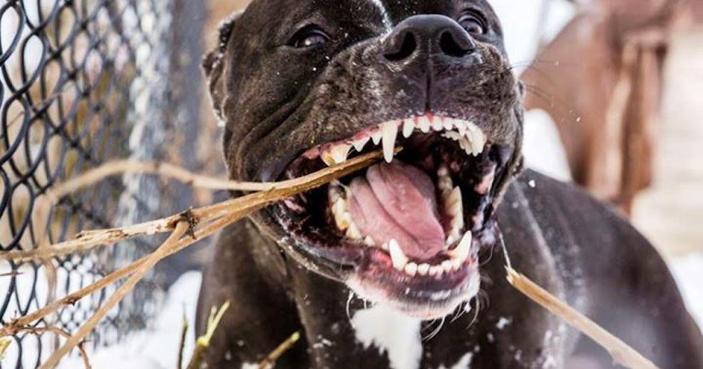

Содержание

История
Предки породы — привезённые в 1870-х годах мелкие травильные собаки Испании, Ирландии, Англии, Шотландии, Италии. С 1880 года сформировавшуюся в Америке породу стали называть ,«пит-бультерьер», под таким названием порода была признана в 1898 году Американским объединённым клубом (UKC). Под названием «стаффордширский терьер» порода была официально признана Американским кеннел-клубом (AKC) в 1936 году, в 1972-м к названию было добавлено слово «американский». В 1936 году американских стаффордширских терьеров и пит-бультерьеров официально разделили. FCI признала американскую породу в 1972 году.

Характер
Собаки этой породы активны и смелы, обладают целеустремленностью и своеобразным интеллектом. Их характер сочетает ряд противоположных качеств: ласку и силу, непримиримость и благодушие, упорство и чувствительность. Эта порода вряд ли подойдет человеку, который впервые заводит собаку. Стаффы бесстрашны, но стремятся к собственной безопасности. Если амстафф решит, что к нему несправедливы, он всем своим видом покажет обиду. Может жить в городской квартире, получая достаточно умственных и физических нагрузок при выгуле. Абсолютно не подходят для уличного, вольерного, цепного содержания.
Порода хорошо поддается дрессировке, но требует работы с опытным кинологом. При правильном отношении владельца к воспитанию и дрессировке и отсутствии наследственных проблем с психикой, не проявляют агрессию к людям. Могут проявлять агрессию к другим собакам.
Амстафф имеет низкий порог раздражительности. Необходима ранняя социализация и последовательное воспитание. Агрессия может проявиться в результате защитно-оборонительной реакции, в ситуации, когда животное чувствует какую-либо опасность. Заводя американского стаффордширского терьера, владельцы должны быть готовы не только заниматься дрессировкой, но и уделять особое внимание физическим нагрузкам
Стандарт породы
Первый стандарт породы был утверждён 10 июня 1935 года. Его проект был создан У. Брендоном, впоследствии ставшим первым президентом Клуба американских стаффордширских терьеров США (STCA), на основе изучения стандартов других пород, подробного обсуждения и тщательного согласования с единомышленниками. 26 мая 1971 года этот стандарт был принят FCI.
Общий вид. Американский стаффордширский терьер должен производить впечатление собаки большой, для своих размеров, силы, ладно сбитой, мускулистой, но в то же время элегантной, проворной и очень живо реагирующей на окружающее. Американский стаффордширский терьер в своих очертаниях должен быть коренастым, не длинноногим или борзоподобным. Смелость его легендарна.
Голова.
Средней длины, глубокая, широкая, с чётко выраженной мускулатурой и отчетливым переходом ото лба к морде.
- Уши посажены высоко, купированные либо некупированные. Последние предпочтительны. Некупированные уши должны быть короткими и держаться полуприподнятыми или стоячими. Полностью висячие уши бракуются.
- Глаза тёмные, округлые, глубоко посаженные и широко расставленные. Розовые веки недопустимы.
- Морда — средней длины, с резким переходом к черепной части, не опущена. Спинка носа округлена.
- Челюсти — чётко очерчены. Крепкая нижняя челюсть обеспечивает мощь хватки.
- Губы плотные и гладкие, ничего висящего.
- Челюсти (зубы): Строго очерчены. Нижняя челюсть сильная, обладающая мощной хваткой. Верхние резцы тесно сходятся с наружной стороной нижних резцов.
- Скулы: очень резко выражены скуловые мышцы.
- Мочка носа обязательно чёрная.
- Живот. Слегка подтянут.
- Шея. Объёмная, слегка сводистая, расширяющаяся от затылка к плечам. Без отвислой кожи. Средней длины.
Корпус.
- Грудь широкая и глубокая на всем протяжении, с достаточно выпуклыми, плотно «сбитыми» ребрами.
- В связи с хорошо развитой грудью передние конечности широко расставлены.
- Хвост — короткий по сравнению с размерами собаки. Низко посаженный, сужается к концу. Не крючковатый, не закинут на спину. Некупированный.
Конечности.
- Передние конечности прямые, с мощными округлыми костями. Пясти отвесные.
- Задние конечности очень мускулистые. Плюсны умеренно короткие.
- Скакательные суставы не вывернуты ни внутрь, ни наружу.
- Лапы среднего размера, с хорошей сводистостью, в комке.
- Движения пружинистые, но без раскачивания и вышагивания. Иноходь является пороком.
- Окрас. Допускается любой цвет — сплошной, цветной, пятнистый окрасы допустимы. Белый окрас, превышающий 80 % поверхности тела, а также чёрно-подпалый или печёночный — нежелательны.
- Рост и масса. Обязательно пропорциональные. Высота в холке — около 46—48 см для кобелей и 43—46 — для сук.
- Недостатки. Нос мясного или светло-коричневого цвета, светлые глаза или розовые веки, слишком длинный или неправильно носимый хвост, недокус или перекус.
- Американский клуб собаководства
- Get to Know the American Staffordshire Terrier Temperament
- История породы и стандарт FCI № 286
Примечания
Литература
- Патрушев Д. Американский стаффордширский терьер // Мой друг собака : журнал. — М.: ООО «Издательство Энимал Пресс»
- Мищиха О. Амстафф // Мой друг собака : журнал. — М.: ООО «Издательство Энимал Пресс»
- Фалкон А. Американский стаффордширский терьер // Мой друг собака : журнал. — М.: ООО «Издательство Энимал Пресс»,